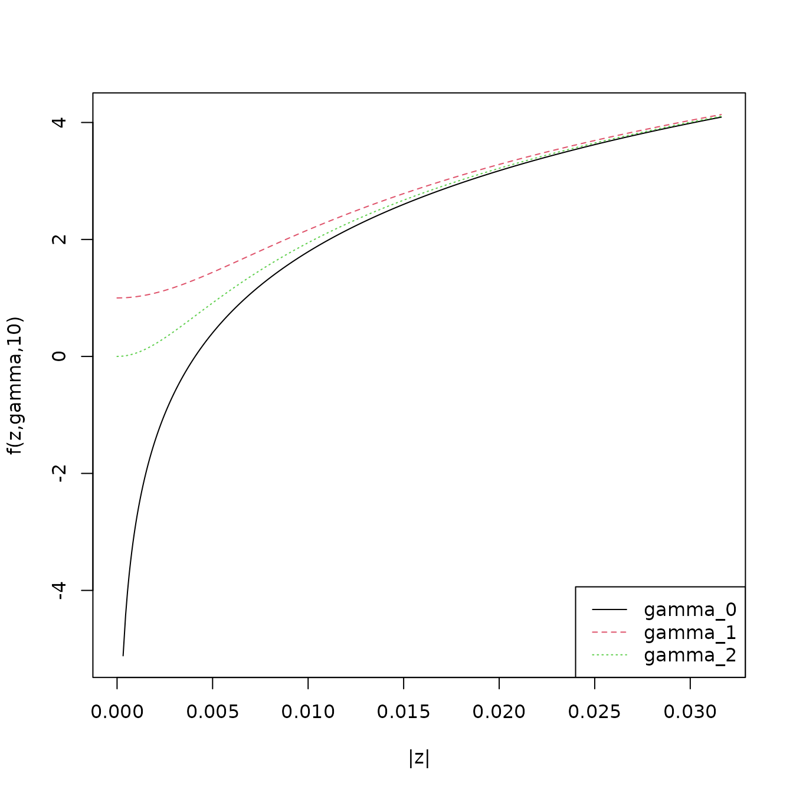
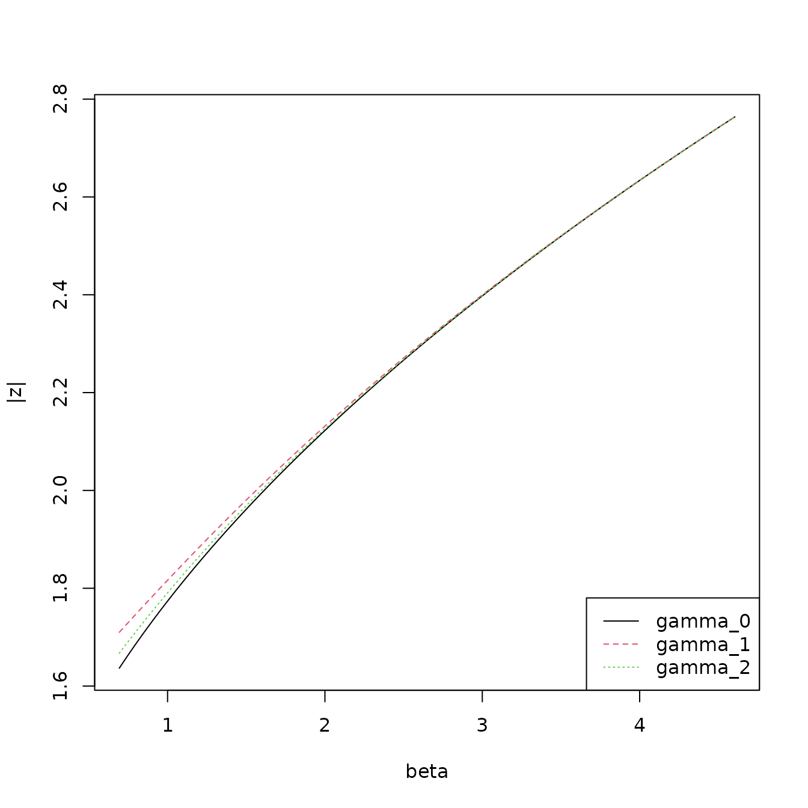

The purpose of this vignette is to present the calculations of the
costs for the univariate Gaussian distribution.
Each time step
belongs to group
whose time stamps are the set
.
A group can have additive mean anomaly
and multiplicative variance anomaly
which are common for
.
Assuming the {} known mean
and variance
of the data generating distribution gives for
The cost is computed as twice the negative log likelhiood plus a
penalty term
giving
No Anomaly (Baseline)
Here
and
and there is no penalty so the cost is
Collective Anomalies
Collective anomalies last more then a single timestep and chnage the
mean and/or variance.
Anomaly in Mean and Variance
Estimates
of
and
of
can be selected to minimise the cost by taking
and
Subsituting these into the cost gives
Anomaly in Mean
There is no change in variance so
.
The Estimate of
is unchanged from that for an anomaly in mean and variance so the cost
is
can be written as
Anomaly in Variance
These is no mean anomaly so
.
Estimate of
therfore changes to
and cost is
Point anomaly
A point anomaly at time
is treated as a single time step with an change in mean or variance.
However the cost of the point anomaly should be higher then the
background cost when
is, in some sense, close to the background.
The cost of a point anomaly in mean is expressed as
while it’s value relative to the baseline cost is can be expressed
using the standardised variable
as
The penaly value in this case can then be clearly linked to the
number of standard deviations away from the mean at which to declare a
point anomaly.
In the case of a point anomaly in variance a naive computation of the
cost gives
and
Since
as
the niave definition of a point anomaly in variance will always produce
point anomalies when
is close to 0. Fisch et al. introduce a term
to control this. The modified cost of a point anomaly in variance is
expressed as
Relating this to the background cost we see that point anomalies may
be accepted in the capa search when
To ensure that anomalies are not declared when
is close to 0 this implies that
should be selected such that
so the gradient
for
close to zero.
The following plot shows the impact for small
of three different choices of
:
- The non correction of
which allows point anomalies as
approaches 0
- The correction
proposed by Fisch et al.
- The minimal correction
for which
.

It is clear that the difference become small as
increases. This is supported by the plot below which shows the value of
at which an point anomaly might occur as
varies. Area above the line are potential anomaly values.
